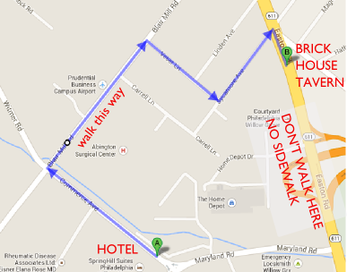

MIRIAM & PRABHAS
HOME | HOTEL | MAP | PROGRAM | REGISTRY
Programs will be available on each day. The Saturday wedding goes from 11 AM to 3.30 PM; the Sunday wedding goes from 1 PM to 6 PM.
Some notes:
- If you are wondering what a Nepali ceremony is like, see a description here.
- Dress code: casual elegant. Slightly more casual on Saturday.
- For dinner on Saturday, guests are on their own. Carrabba’s (2575 Maryland Rd) is close to the hotels. If you want to try some Philly Cheesesteaks, consider driving over to Silvio’s Deli (100 N York Rd, Hatboro, PA).
- At 8pm on Saturday night, Miriam and Prabhas will try and make it out to drinks at Brick House Tavern & Tap . Everyone is invited, but do be aware that the bride and the groom may not, despite their hopes, have enough energy to come join you. FOR THOSE OF YOU WALKING, NOTE THE MAP BELOW:
